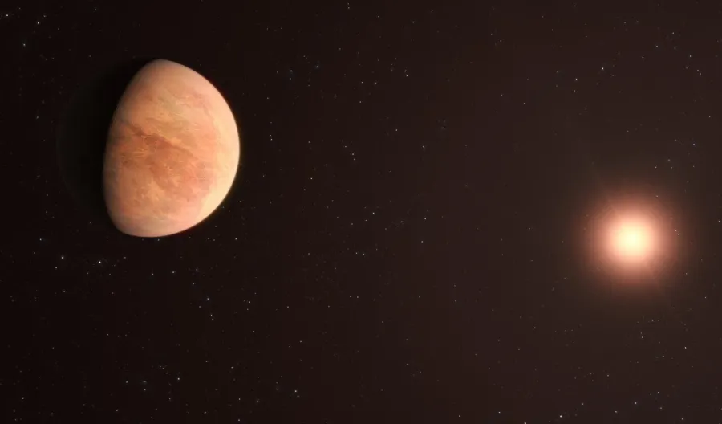

5. August 2021
L 98-59: Gesteinsplanet mit halber Venusmasse
Mit dem Spektrografen ESPRESSO am Very Large Telescope der ESO wurden die Planeten des 35 Lichtjahre entfernten Sterns L 98-59 vermessen. Der innerste hat nur die halbe Masse der Venus – der bis dahin leichteste Exoplanet, dessen Masse mit der Radialgeschwindigkeitsmethode bestimmt wurde.
Die beiden innersten Planeten sind wahrscheinlich trocken. Beim dritten könnten bis zu 30 Prozent der Masse aus Wasser bestehen. Das Team fand außerdem einen vierten Planeten und Hinweise auf einen fünften in der habitablen Zone, der damals noch nicht bestätigt war.
Quelle: ESO: "New ESO observations show rocky exoplanet has just half the mass of Venus." (eso2112), 05.08.2021